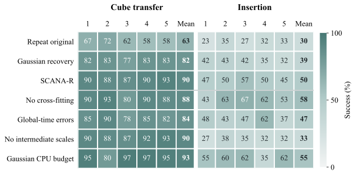
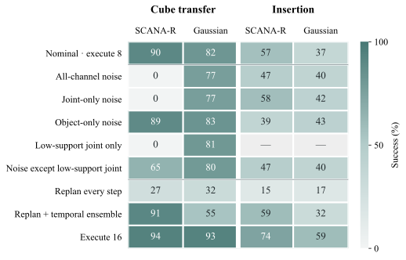
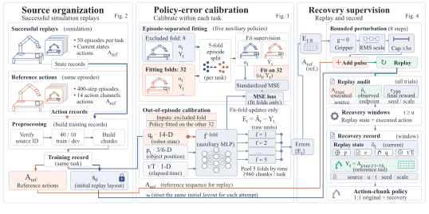
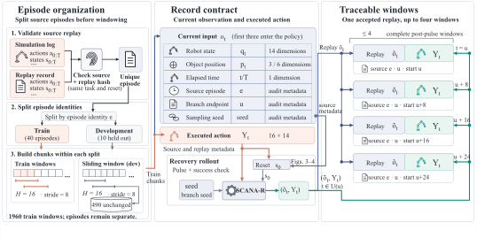
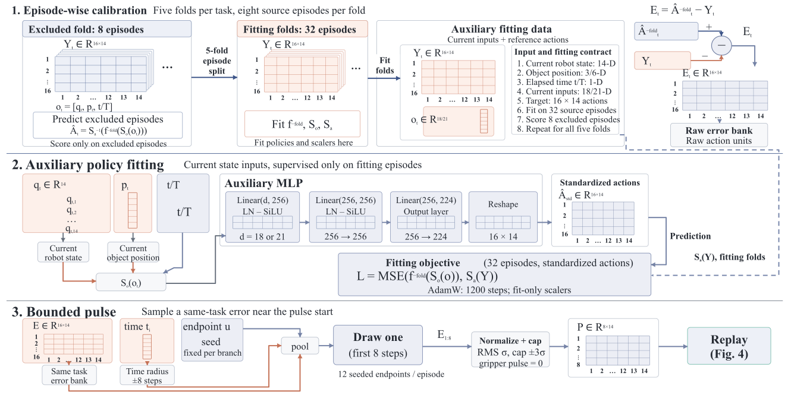
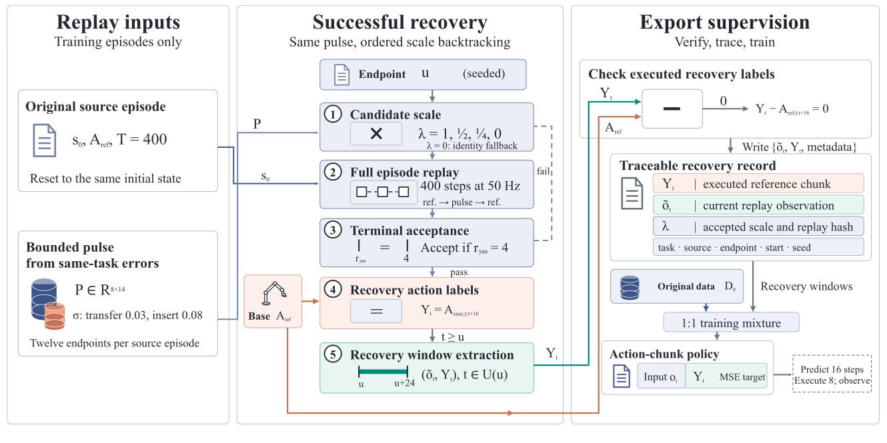

1. Calibrate
Five auxiliary policies predict chunks for held-out source episodes. The error bank preserves task and temporal phase.
Research manuscript State-based robot learning in simulation
Learn recovery from states the robot actually visits.
Current-study transfer intervention: eight-step execution, one-step replanning, and one-step replanning with temporal ensembling. Policy seed 7, layout 96000; fixed before inspecting video outcomes.
Recorded simulation replay · 1× speed · muted, looping video Open MP4 ↗
Successful demonstrations sparsely cover the states encountered after a policy deviates from its reference trajectory. SCANA-R uses source-episode cross-fitting to estimate policy errors, samples short action perturbations from the same task and nearby phase, and executes them in simulation. The reference action sequence then resumes; a recovery branch is accepted only when its terminal state satisfies the task’s success criterion. Recovery supervision pairs newly observed states with actions that were actually executed.
The current independent-library study adds 11,040 evaluations. SCANA-R reaches 89.7% transfer and 49.7% insertion success, compared with 81.7%/38.7% for Gaussian recovery. At the same total active CPU budget, Gaussian collection with longer policy training reaches 92.7%/54.7%. Six-task repeated-library macro success is 89.9% SCANA-R, 89.5% Gaussian, and 93.1% original repetition. Recovery collection helps the tested bimanual policies; calibration is not established as necessary or superior at matched compute. See library-level results and failure interventions.
Five new libraries per ACT task and three per Meta-World task separate collection variability from policy fitting. Source demonstrations stay fixed. The calibration advantage over standard Gaussian recovery is inconclusive under the two-task adjusted intervals; the compute-matched Gaussian control has higher point means on both tasks.
| Method | Transfer | Insertion | Six-task macro |
|---|---|---|---|
| Clean repeat | 63.3 | 30.0 | 93.1 |
| Gaussian recovery | 81.7 | 38.7 | 89.5 |
| SCANA-R | 89.7 | 49.7 | 89.9 |
| Gaussian, matched total CPU | 92.7 | 54.7 | Not evaluated |
Calibration superiority is not established by the adjusted comparisons. Source demonstrations remain fixed; library repeats add collection variability, not new source-data populations.


Calibrate the perturbation. Execute the recovery. Keep the observation and action together.

Five auxiliary policies predict chunks for held-out source episodes. The error bank preserves task and temporal phase.
A bounded eight-step pulse perturbs the action channels while protecting the grippers. Failed branches retry with a smaller pulse.
After the pulse, pair actual observations with executed reference actions. Mix original and recovery records equally.



Independent-library and matched-cost comparisons. Same bank 101, policy seed 17 and layout 97000; all four methods shown without outcome-based selection.
Every one of the 400 pre-action states and rewards matches the archived trajectory. Full-length playback at 1× speed. The six videos also include joint-noise and temporal-ensemble interventions. All current videos, outcomes and provenance ↗ · Earlier selected examples
Earlier extension: six-task results and ACT deployment stress tests ↗
Five training seeds × 40 common layouts per task.
Matched initialization, batch streams and final training budgets.
| Method | Transfer Cube | Insertion |
|---|---|---|
| Clean repeat | 134 / 200 67.0% | 86 / 200 43.0% |
| Gaussian recovery | 175 / 200 87.5% | 90 / 200 45.0% |
| Frozen observations | 117 / 200 58.5% | 87 / 200 43.5% |
| SCANA-R | 184 / 200 92.0% | 134 / 200 67.0% |
Evaluation success uses maximum episode reward = 4; collection acceptance requires terminal reward = 4. In the CSV, “Calibrated recovery” denotes SCANA-R and “Frozen context” denotes frozen observations.
SCANA-R gains 25 and 24 percentage points over Clean repeat; paired 95% intervals are [7.5, 42.5] and [12.5, 36.0]. Against Gaussian recovery, the gain is 4.5 points on Transfer Cube [−5.0, 16.0] and 22 points on Insertion [5.0, 40.5]. The calibration benefit is task-dependent.
Intervals jointly resample paired seeds and layouts. Five policy fits are not 200 independent training runs; the recovery bank is fixed across seeds. Summary CSV · Paired comparisons
The complete CSV includes four historical label-only controls, for 3,200 rollouts in total. Their original checkpoints and sampling streams are retained; they diagnose earlier versions and are not single-component ablations. Recovery collection has additional simulator and auxiliary-training costs. There is no same-collection-budget DART reproduction. The experiments do not establish visual VLA/GR00T transfer, real-robot performance or general collision safety. Full evidence scope.
Same training seed. Same initial layout. Synchronized, uncut playback.
These are illustrative contrasts, selected as the lowest layout for seed 7 where SCANA-R succeeds and Clean repeat fails in each task. They are not a random sample. Videos replay archived actions at real-time speed; all 400 joint-state observations and step rewards per rollout match the saved records. Aggregate evaluation is reported below. Video provenance and rendering ↗
Start by recomputing the reported statistics from the included evaluation records. Simulator replay and video rendering use the separate, hash-verified trajectory bundle.
python -m pip install -r requirements-statistics.txt
python scripts/reproduce.pyCode: Apache-2.0; ACT simulator assets: MIT. Compact statistics are included in the repository. Four hash-verified evidence archives provide recorded trajectories, recovery attempts and checkpoints outside the Git tree. Download and import instructions. The manuscript PDF remains private.